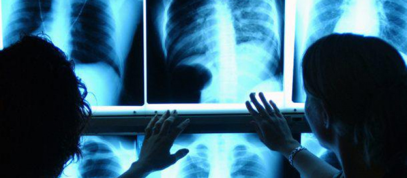

Login
Home
Pesquisa
Especialidades
Quem Somos
Outros
Cadastro
Fale Conosco
Campanhas
Avalie Nosso Site
Ajuda
Perfil
Sair
Cardiologia
Cardiologia é a especialidade médica que se destina ao diagnóstico e ao tratamento das doenças que afetam o coração, bem como os outros componentes do sistema circulatório. Os exames mais comuns realizados são eletrocardiograma, teste ergométrico, ecocardiograma, holter e monitorização da pressão arterial (MAPA e MRPA). O médico especialista nessa área é o cardiologista.
Obstetrícia
Obstetrícia é a especialidade médica que estuda e acompanha os aspectos fisiológicos e patológicos da gestação, desde o pré-natal até o pós-parto. O médico especialista nessa área é o obstetra.
Pediatria
Pediatria é a especialidade médica que dá assistência à criança e ao adolescente, (geralmente até 13 anos) nos seus diversos aspectos, sejam eles preventivos ou curativos. Além de tratar da saúde infantil, pode orientar as famílias sobre questões como alimentação, aleitamento materno, vacinação e prevenção de acidentes. O médico especialista nessa área é o pediatra.
Clínica Geral
Clínica Geral é a especialidade médica que tem uma visão global do organismo humano e está preparado para tratar vários tipos de doenças ou encaminhar o paciente para outras especialidades. O médico especialista nessa área é o clínico geral.
Dermatologia
Dermatologia é a especialidade médica que se ocupa do estudo, diagnóstico e tratamento clínico das doenças e afecções relacionadas à pele, aos pêlos, às mucosas, ao cabelo e às unhas. O médico especialista nessa área é o dermatologista.
Ginecologista
Ginecologia é a área da medicina que estuda o aparelho genital feminino (ovários, trompas, útero, vagina e vulva). Os principais problemas tratados com um ginecologista são câncer dos órgãos reprodutivos incluindo ovários, tuba uterina, útero, vagina e vulva; doença inflamatória pélvica; corrimento e infecção vaginal; dentre outras. O médico especialista nessa área é o ginecologista.
Fisioterapia
Fisioterapia é uma ciência da saúde aplicada ao estudo, diagnóstico, prevenção e tratamento de disfunções cinéticas funcionais de órgãos e sistemas. Ela estuda, diagnostica, previne e trata os distúrbios, entre outros, cinético-funcionais (da biomecânica e funcionalidade humana) decorrentes de alterações de órgãos e sistemas humanos. Sua gestão necessita do entendimento das estruturas e funções do corpo humano.
Ofitalmologia
A oftalmologia é uma especialidade da medicina que estuda e trata as doenças relacionadas ao olho, à refração e aos olhos e seus anexos. O médico oftalmologista realiza cirurgias, prescreve tratamentos e correções para os distúrbios de visão.
Geriatria
Medicina geriátrica ou geriatria é o ramo da medicina que foca o estudo, a prevenção e o tratamento de doenças e da incapacidade em idades avançadas. O termo deve ser distinto de gerontologia, que é o estudo do envelhecimento em si. Geriatras são médicos especializados no cuidado com o idoso e têm a sua formação variável em diferentes países, mas geralmente esta passa por uma formação generalista (medicina interna, medicina de família, etc.) e a seguir são treinados nos aspectos específicos da saúde do idoso.
Neurologia
Neurologia é a especialidade médica que trata dos distúrbios estruturais do sistema nervoso. Especificamente, ela lida com o diagnóstico e tratamento de todas as categorias de doenças que envolvem os sistemas nervoso central, periférico e autônomo, parassimpático e simpático incluindo os seus revestimentos, vasos sanguíneos, e todos os tecidos efetores, como os músculos.
Psicoterapia
A psicoterapia é um tipo de abordagem realizada para ajudar as pessoas a lidarem com suas emoções e sentimentos, assim como, para auxiliar no tratamento de alguns problemas mentais. Os métodos utilizados são baseados em técnicas diferentes, dependendo da especialidade de cada terapeuta, que pode ser psicólogo ou psiquiatra.

Radiologia
Radiologia é o ramo ou especialidade da medicina que utiliza as radiações para a realização de diagnósticos, controle e tratamento de doenças. Ela permite a visualização de ossos, órgãos ou estruturas através do uso de radiações (sonoras, eletromagnéticas ou corpusculares), gerando desta maneira uma imagem.